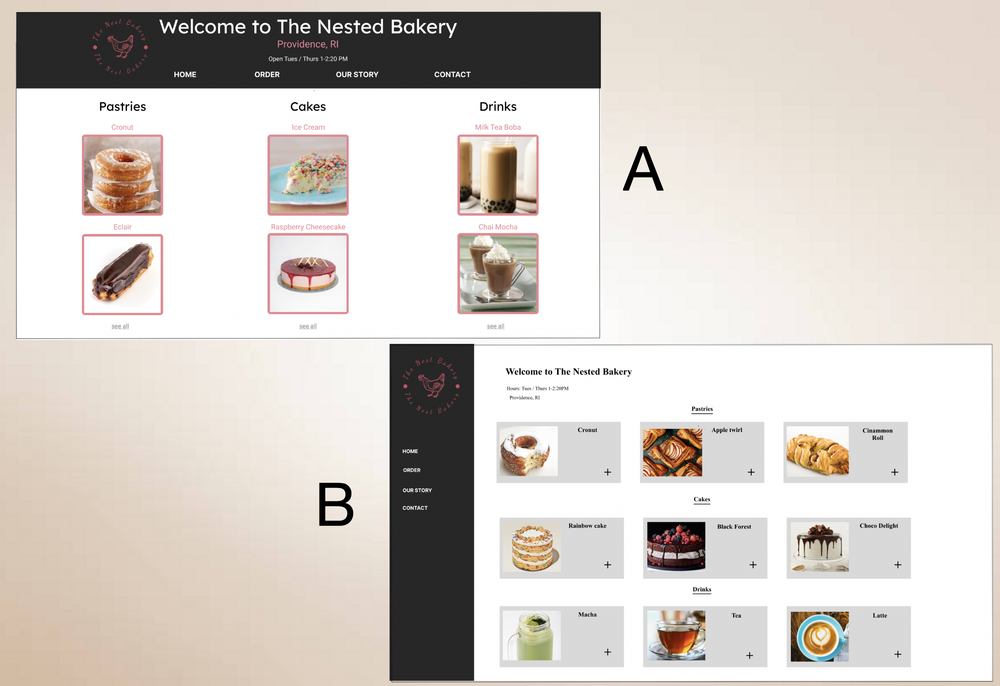
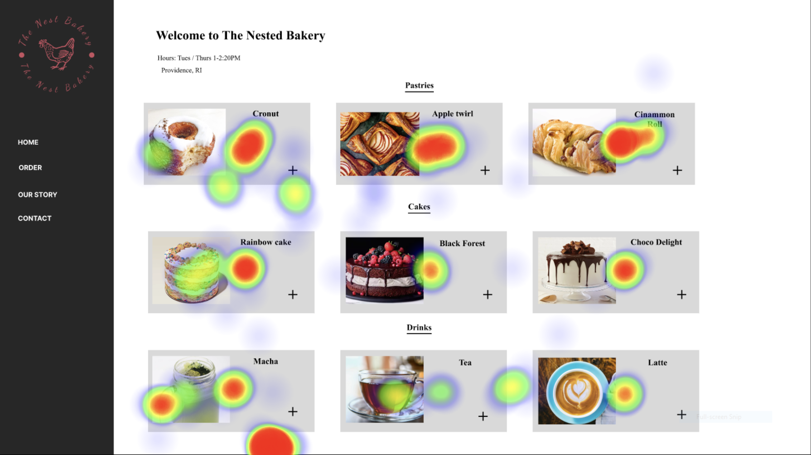
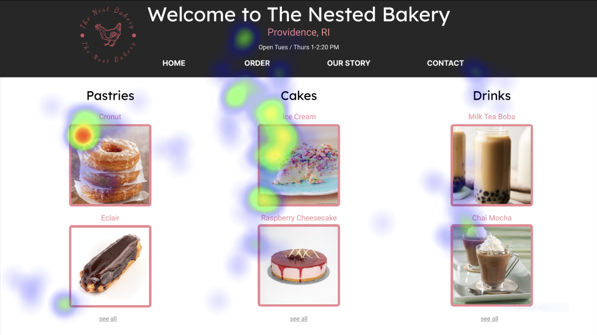

A/B Testing
An exploration in decision-making and conceptual models

What is A/B testing?
A/B Testing, is a process by which designers produce two different designs with intentional variations. These two designs are then tested on users to see how different choices lead to a different cognitive processes to finally form a resultant design based on the results
Tools Used:
-
Figma, Eye-Tracking and Heatmap Generating Software
Background
Context
- For this project, I wanted to explore how different design elements influence consumer decision making
- This included understanding what consumers "like", what they find easier, what features/layout is easiest to understand
- Although all users have different preferences, I wanted to understand whether there are specific design choices were considered "better" in absolute
- To do this, I picked the simple interface of a bakery shop and made two separate designs
- The rest of the process is described below
Psychology Considerations
- Automatic Processing (Model I): Humans have a Dual Model of Processing Information, for effecient and quick interaction, we seek to tap into Model I, ie.e the automatic mode.
- Schema: Users tend to think passively, i.e. with their schemas; which design better plays into user schemas?
- Conditioning: The idea of conceptual models, in this case that of a menu, are a product of cognitive conditioning. Future behavior and choices are often dictated by past interfaces.
Process
For my exploration of decision-making, I used an interface of a bakery shop menu:
- I made 2 vairations of the menu with team members, one with a columnar hierarchy, another with a row hierarchy as pictured on the right
- A Null and Alternative hypotesis was made about which design would be preferred
- After this, 2 unknown users were presented with both interfaces and their eyesight was tracked as though they were customers buying items from the shop
- Using this data, I generated a heatmap (a still image that depicted where participants' gazes were fixed) and an animated replay of the gazing motion.
- These were then anaylzed to interpret success rate of both designs and understand the implications of different scan patterns

Figure A: Column-oriented Design Heatmap

Figure B: Row-oriented Design Heatmap
Hypotheses
Null Hypothesis
- In both the columnar and row oriented designs of the menus, there will be equally clear scan patterns with no difference is checkout time or clarity of eye-tracking paths
Alternative Hypothesis
- The row oriented design of the menus would have clearer scan patterns than the columnar design, with lower checkout time or more clarity of eye-tracking paths as it conforms to the conceptual model of an online menu more
Findings
From the eye-tracking data and heatmaps I understood the following:
- We hypothesized that in both designs, users would be drawn to the highlighted images for each product; this was reflected in the data.
- We found that the row-grouping design's "+" icon would conform to the conceptual model of a menu more, causing a better understanding of the page and clearer scan patterns.
- Both users "scanning" the page left-to-right or top-to-bottom, with more concentrated left-to-right scanning
- We found that the time taken in the row-oriented design to checkout was lower, further proving that the design choices, especially the "+" were preferred by users
- From the heatmaps and data, we can in theory reject the null hypothesis and accept the alternative hypothesis.
- However, to make conclusions about the hypothesis further Chi and T-testing as well as calculations of significance after testing on multiple users is needed
Figure A: Column-oriented Design
Figure B: Row-oriented Design
Takeaways
Conclusions in Decision-Making
- User decision-making is highly prone to parse what is faimilar or recognizable based on conceptual models
- I observed actual data to support why recognizing is better than learning or relearning as there is readily available schema
- User decisions are highly dependent on perceptive cues like the "+" that triggers the correct representative heuristics
Reflections
- From this project, I learnt to interact with newer, high tech equipment including eye-tracking software and heatmap generating software
- I learnt to pay more attention to design choices as I saw in practice how small changes affect user output.
- I also learnt to interact more with statistics and analyze empirical data.